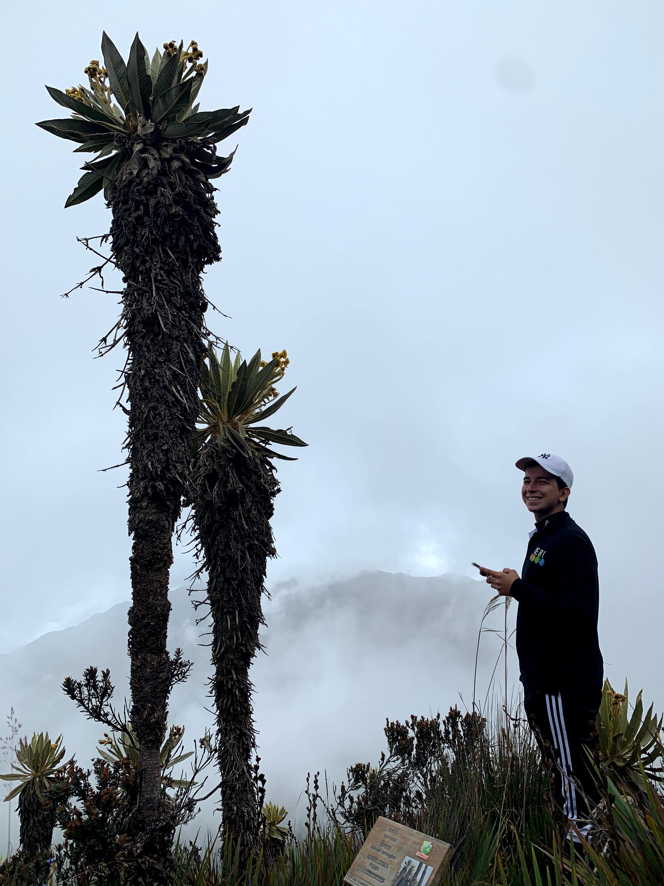
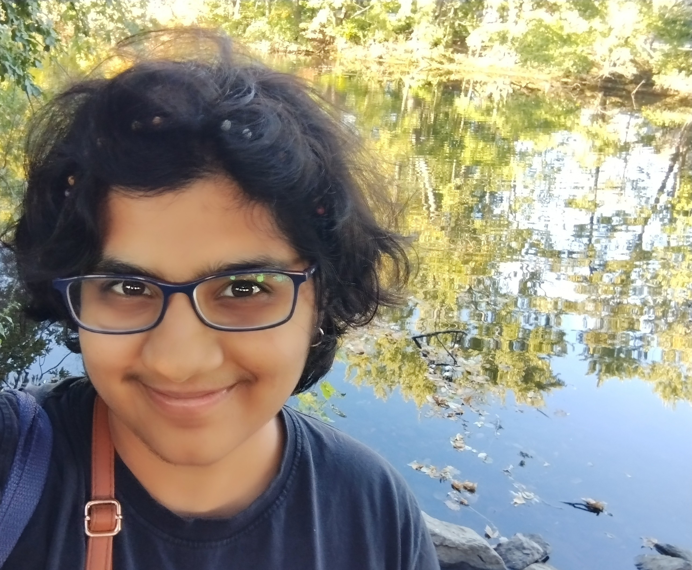
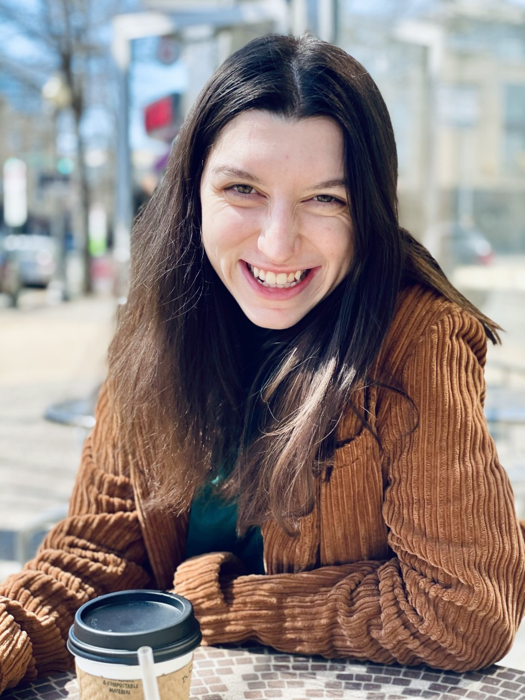
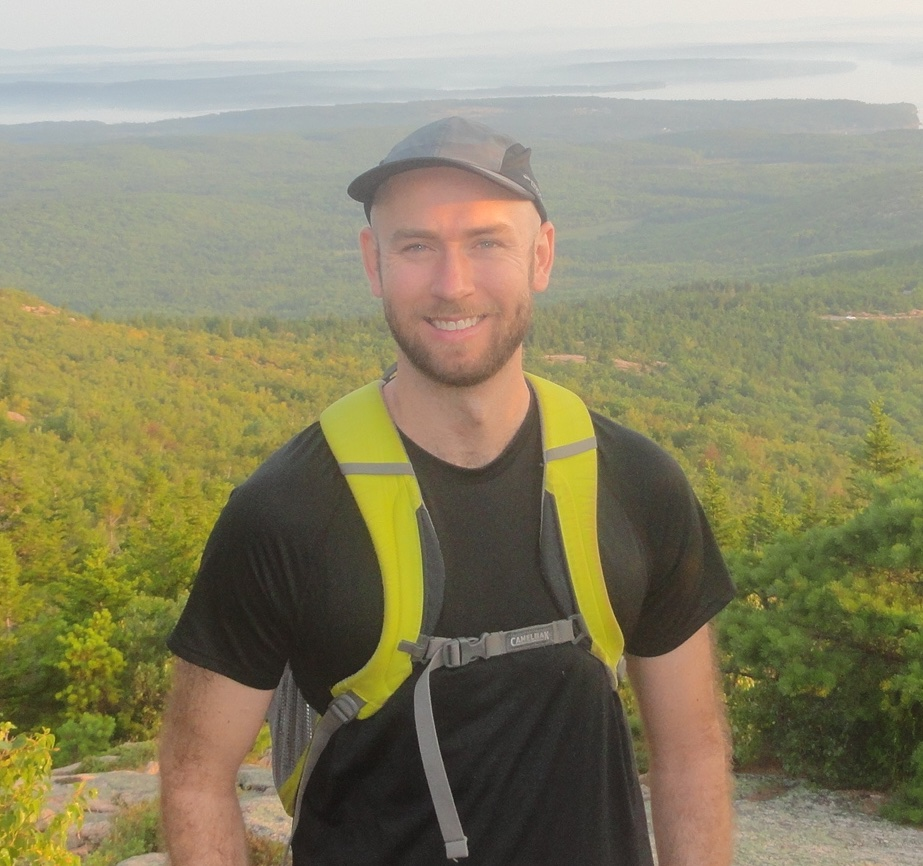
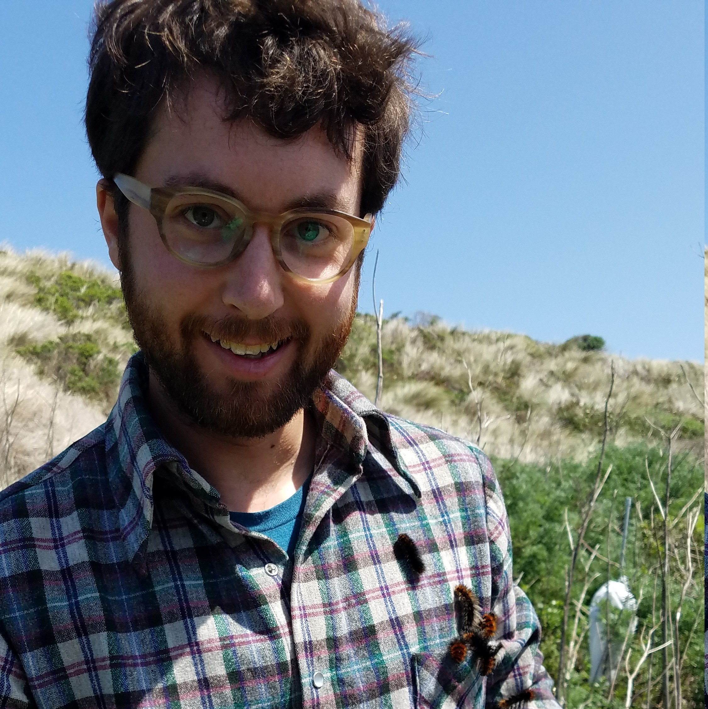

|
Graduate Students
Alejandro is originally from Cali, Colombia, and graduated in 2021 from Universidad Icesi with a BSc in biology. Having a tropical botany and plant ecology/genetics background, he’s broadly interested in understanding how evolutionary processes affect genetic traits, and the genetics involved in adapting to new environments. He is also interested in genetic engineering, its applications to conservation of biodiversity and the potential impacts on species persistence. Alejandro is very passionate about cooking, baking, and is fascinated by rare plants.

Kasturi is a first year PhD student in the biology program at Tufts University. She completed a BS-MS dual degree from IISER, Pune in July 2021. Her research so far has been about experimental evolution of microbes under various kinds of fluctuating environments. At Tufts, she wants to understand how microbial communities assemble and evolve using both modelling and experimental approaches. Her current hobbies are doing nail art and learning new languages.

SJ is a first year PhD student at Tufts University. They received their Bachelors in Mathematical Biology from The College of William and Mary and their Masters in Bioinformatics from Georgetown University. SJ’s research revolves around the intersection of Bioinformatics and Epidemiology. They are asking questions centering on “How the human genome has evolved over time in response to infectious diseases?” As well as “What modeling techniques we can use to show how different transmission patterns affect adaptation?”.
Principal investigator

Lawrence graduated from UCSF with a PhD in bioinformatics in 2014, where he was supervised by Ryan Hernandez. He followed this up with a highly stimulating but nearly interminable postdoc at Stanford and UC Berkeley. He is interested in the ecological and evolutionary processes that drive adaptation. Why are some species (apparently) fast-adapting and why are some slow-adapting? How will adaptation affect loss of biodiversity and community composition in our rapidly changing world? Lawrence's favorite hobbies include kayaking, biking, and hiking, usually with his family.
Lab alumni
Adam joined the Uricchio Lab after finishing a PhD in Ecology at UC Davis with Richard Karban and Marcel Holyoak
and worked on statistical methods related to population dynamics to signals of local adaptation in butterflies. He is now in a
permanent position as an aquatic biologist in Maine. Congratulations Adam!
Joining the Lab
Tufts undergraduates are welcome to contact us about potential research opportunities, which include paid positions or research for course credit. Please fill out this webform to help us get to know a little about you and we will get back to you.
Prospective grad students are admitted through the Biology Department PhD program at Tufts. Our lab is not currently recruiting new PhD students, but we do collaborate with other labs. Feel free to send Lawrence an email to inquire about the program.
We invite postdocs who are interested in computational genomics teaching and research in evolutionary genetics/ecology to contact us about potential opportunities. New postdocs would most likely be supported on a combination of lab funds and IRACDA funds, so a demonstrated interest in both teaching and research would be essential.